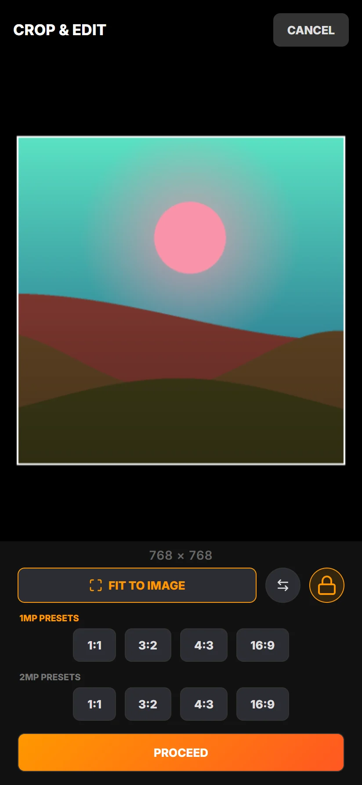
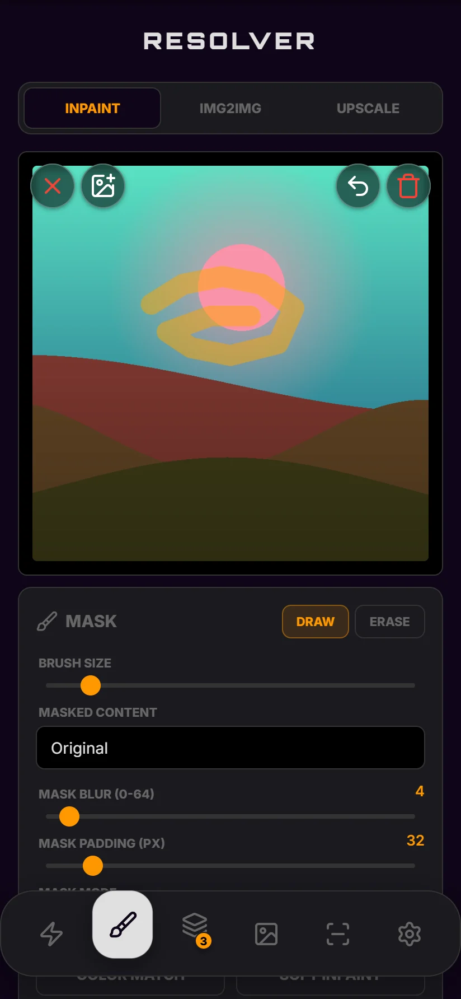
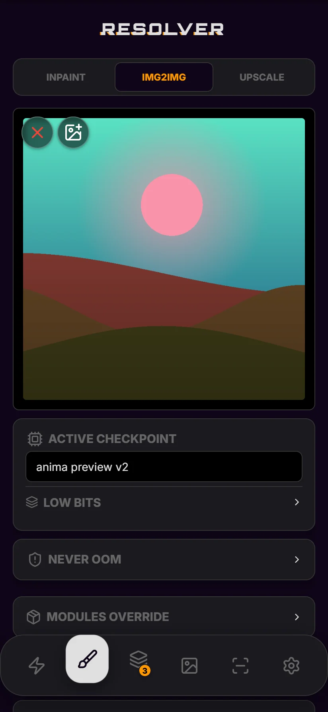
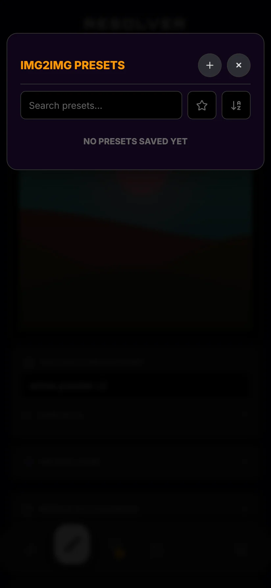
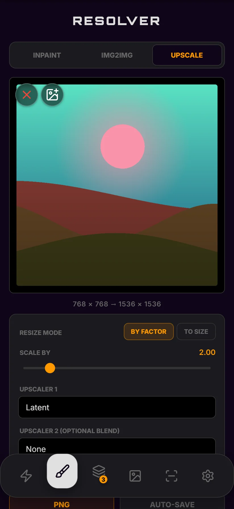

Docs / Edit
Inpaint, img2img & Upscale
The second tab works on a picture you already have. Inpaint repaints the part you paint over, img2img redraws the whole picture, and Upscale enlarges it. Switch with the three buttons at the top, or swipe sideways.
Getting a picture in
- UPLOAD IMAGE on the tab: choose one from the phone. It opens in Crop & Edit first.
- RECENT: pictures you uploaded before, to open again (turn off in Config → Inpaint & Analyze → Recent uploads).
- From a result: open it in the viewer, then Send → Inpaint. From Analyze: INPAINT, IMG2IMG or UPSCALE.
The picture is shared by Inpaint and img2img; each keeps its own prompt, settings and Denoising. The on the picture removes it, replaces it.
Crop & Edit
Every picture passes through here, so it has a size the model handles well.
- Move and zoom
- Drag to move, pinch to zoom, double-tap to switch between the whole picture and 100%. The box shows what’s kept.
- 1MP / 2MP Presets
- The same shapes as on Generate (1:1, 3:2, 4:3, 16:9). The label of the tier closest to your picture’s size lights up. Sizes.
- FIT TO IMAGE
- The whole picture, at its own size and shape (in multiples of 8).
- Flip
- Portrait ↔ landscape.
- Confine to Image
- On (locked): the box always stays inside the picture. Unlock it to zoom out past the edges: see outpainting.
- — × —
- The size that will be sent.
- PROCEED · CANCEL
- Use the crop, or go back to where you came from.

Outpainting: making the picture bigger
Unlock Confine to Image and zoom out so the box goes past the picture’s edges. After PROCEED, the empty margins are filled with the picture’s edge colours (softly blurred) and masked, and the tab switches to Inpaint, which paints the new area. Describe the whole scene in the prompt and use a high Denoising (0.8–1).
Inpaint
Paint over what should change, with your finger. It shows as a see-through layer.
- DRAW / ERASE
- Paint the mask, or rub some off.
- Brush Size
- 5–300. While painting, a floating Brush Size slider sits above the dock (Config → Inpaint & Analyze), and a circle shows the size as you change it.
- Undo the last stroke, clear the mask, and reset the zoom (pinch the picture to zoom in for fine work).
Mask settings
- Masked Contentdefault Original
- What the masked part starts from. Original: what’s there now (best for changes that keep the shape). Fill: the surrounding colours. Latent Noise: random noise, for something new. Latent Nothing: blank. Noise and Nothing need Denoising near 1.
- Mask Blur0–64 · 4
- Softens the mask’s edge, so the new part blends in.
- Mask ModeWHOLE / MASKED
- WHOLE: the whole picture is worked on at its size. MASKED: only the masked area (plus padding) is cut out, worked on at full resolution and put back: much more detail for a small area such as a face or hand.
- Mask Padding0–256 px · 32
- With MASKED: how much around the mask the model sees, for context.
- Color Match
- Matches the new part’s colours to the original.
- Soft Inpaint
- Blends the edge gradually instead of a hard cut (Forge’s Soft Inpainting).

Below these are the usual parts: Active Checkpoint (its own, apart from Generate’s; Flux checkpoints get their CLIP / T5 row here too), Low Bits and Modules Override when shown, ADetailer and ControlNet when switched on for “other”, the Prompt (with LoRA, Styles, Presets and Recent Prompts), Negative and Generation Params.
In Inpaint the prompt is for what goes in the mask: “blue sky with clouds”, not the whole scene. (The default prompt is just original.)
img2img
No mask: the whole picture is redrawn, guided by your prompt. Use it to restyle a picture, add detail, or make variations.
- The prompt describes the whole picture. The button in the Prompt header (img2img only) brings in the prompt saved in the picture.
- Denoising sets how much changes (0.5 by default; 0.75 for Inpaint). The − / + buttons move it by 0.01, and the hint below says how many steps will really run.
- PRESETS: saved img2img presets. Styles and LoRAs work here too.
- Config → Inpaint & Analyze → Keep source seed reuses the seed saved in the picture.

How much does Denoising change?
How much noise covers the picture before it’s redrawn
Forge runs only part of the steps in img2img: about Steps × Denoising (+1). So raise Steps a little when you use a low Denoising.
img2img presets
A preset saves a prompt with its settings, for jobs you repeat (“upscale detail pass”, “anime to painting”). Tap PRESETS under the prompt.
- Tap a preset to apply it; search, ★ favorites and sort as in the other lists.
- New: Name, Steps, CFG, Denoise, Prompt and Negative, filled from the tab. FROM THE IMG2IMG TAB lists the rest it keeps; USE CURRENT SETTINGS takes them again.
- Presets are in backups (Presets).

Upscale
Enlarges the picture with Forge’s upscaler models (Extras), quickly and without changing what’s in it.
- Resize Mode
- BY FACTOR: Scale By 1–8 (2 by default). TO SIZE: a Width and Height; Crop to Fit (on) crops instead of stretching when the shape differs. The line under the picture shows the size before and after (768 × 768 → 1536 × 1536).
- Upscaler 1
- The model: R-ESRGAN 4x+ (photos), R-ESRGAN 4x+ Anime6B (anime), 4x-UltraSharp…
- Upscaler 2 (optional blend)
- A second model blended in by Upscaler 2 Visibility (0–1).
- Copy Metadata from Source
- Puts the original’s prompt and settings into the result, so Analyze can still read it.
- Face restoreConfig → Experimental
- With Additional upscale features on: GFPGAN Visibility, CodeFormer Visibility and CodeFormer Weight.
- UPSCALE · ABORT · SKIP
- Start, stop, or skip the current one. With Progress Bridge, its real progress shows.


In the viewer, hold an Upscale, img2img or Inpaint result (made this session) to see the picture it was made from, at the same zoom. Let go to see the result again.
Want more detail, not just more pixels? Use img2img at a bigger size with Denoising 0.3–0.4, or Hi-Res Fix while generating.